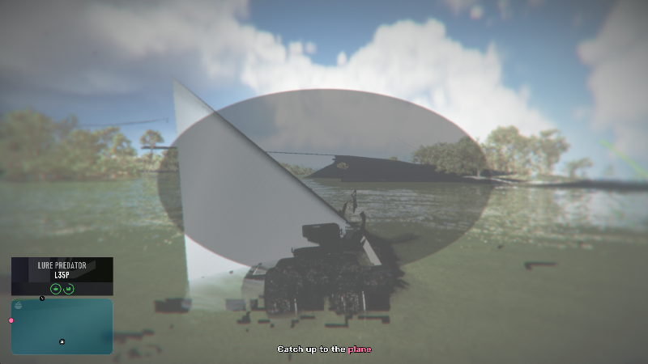

快艇和船上的两个人都清晰可见
在“追上飞机”任务后一次采集的船尾画面中，浅色楔形和黑色尖刺消失了，船上的两个人都能看见。前两个快艇场景中，抽样检查的 233 个几何组和 12,543 次索引重映射读取均与游戏内存一致。水面方块和光照不均匀的问题依然存在。 对照快艇截图 →


后一次采集的船尾画面中，浅色楔形和黑色尖刺已经消失，水面方块和光照不均匀仍然可见。
另一个常规版本在河道航点测得 6.745 帧/秒，统计覆盖 120 个连续显示帧间隔。通过游戏原有的检查点跳过功能到达营地后，使用正常操作完成了步行、转动视角和再次步行。
对照快艇截图 →在“追上飞机”任务后一次采集的船尾画面中，浅色楔形和黑色尖刺消失了，船上的两个人都能看见。前两个快艇场景中，抽样检查的 233 个几何组和 12,543 次索引重映射读取均与游戏内存一致。水面方块和光照不均匀的问题依然存在。 对照快艇截图 →
在河道航点，常规版本的 120 个连续显示帧间隔测得 6.745 帧/秒，先前可比测试为 5.29–5.38 帧/秒。随后，通过游戏原有的检查点跳过功能到达营地。短距离步行、转动视角和再次步行均响应了正常操作。 查看帧率及营地报告 →
一项独立测试分别在 RTX GPU 和 WARP 软件渲染器上，把五组已知位图案传给原始水面顶点着色器。两者的像素覆盖与预期完全一致。全空为 0，全满为 14,400，左半区为 7,200，选定位为 1,312，最高位为 288。这些输入由测试提供。G24 黑块帧中实际传给着色器的分块值仍待采集。 查看水面着色器测试 →
渲染团队已测试采集水面分块掩码上相邻九格的工具，正在为下一次游戏对照打包。目前还没有实机掩码数值。
G22 在栈道场景跳过了这个原始着色器。修正后的译码现已能在 RTX 5090 上创建原生管线。在独立计算测试中，448 个输出值全部相符，周边 28 个保护值也保持完整。对栈道画面的实际效果仍待游戏验证。
以下为各项工作的分工和最近确认时间，均为 UTC。
正打包九格水面分块掩码采集，以追查两个丢失颜色的像素。
通过游戏原有的检查点跳过功能到达营地后，确认了步行、转动视角和再次步行。
在河道航点，以 120 个连续显示帧间隔测得 6.745 帧/秒。
已在驱动上验证不透明分块程序和透明度预滤波程序，正在核对原始程序的实机执行情况。
PortWatch 第 69 号提报仍开放，暂无评论，也没有已确认的排名。
核对了同一快艇目标下的两张游戏截图，并记录仍存在的水面和光照问题。